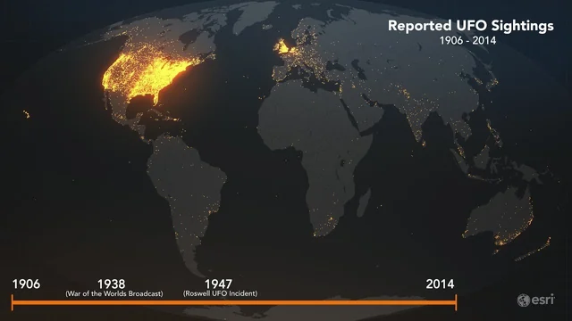
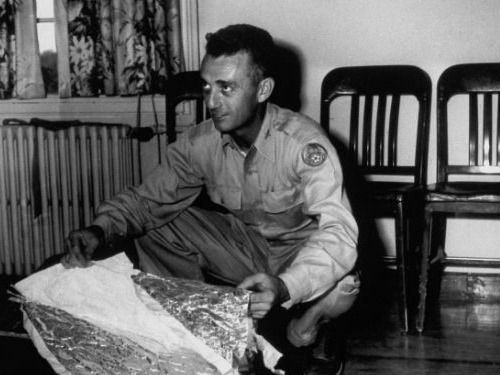

Facts About Project Blue Book
🔍 Project Blue Book was a U.S. Air Force program that investigated UFO sightings from 1952 to 1969.
📁 Over 12,000 UFO reports were collected, and most were explained as natural or man-made phenomena.
🚫 The project officially ended in 1969, concluding that UFOs posed no national security threat.
👽 Some cases remain unexplained, leading to ongoing public interest and conspiracy theories.
- Roswell Incident (1947)
- Socorro UFO Sighting (1964)
- Kecksburg UFO Crash (1965)
- A mild form of mass hysteria.
- Individuals who fabricate such reports to perpetrate a hoax or seek publicity.
- Psychopathological persons.
- Misidentification of various conventional objects.
Global UFO Sightings
While Project Blue Book focused mainly on the United States, UFO reports have been recorded all around the world. This map highlights sightings from 1906 to 2014, with notable peaks in North America.
Famous UFO Cases
Project Blue Book History
Captain Ruppelt Era
According to Captain Edward J. Ruppelt, by the end of 1951, several high-ranking, very influential USAF generals were so dissatisfied with the state of Air Force UFO investigations that they dismantled Project Grudge and replaced it with Project Blue Book in March 1952. One of these men was Gen. Charles P. Cabell. Another important change came when General William Garland joined Cabell's staff; Garland thought the UFO question deserved serious scrutiny because he had witnessed a UFO.
The new name, Project Blue Book, was selected to refer to the blue booklets used for testing at some colleges and universities. The name was inspired, said Ruppelt, by the close attention that high-ranking officers were giving the new project; it felt as if the study of UFOs was as important as a college final exam. Blue Book was also upgraded in status from Project Grudge, with the creation of the Aerial Phenomenon Branch.
Captain Hardin era
In March 1954, Captain Charles Hardin was appointed the head of Blue Book; however, the 4602nd conducted most UFO investigations, and Hardin did not object. Ruppelt wrote that Hardin "thinks that anyone who is even interested [in UFOs] is crazy. They bore him." In 1955, the Air Force decided that the goal of Blue Book should not be to investigate UFO reports but to minimize the number of unidentified UFO reports. By late 1956, the number of unidentified sightings had dropped from the 20-25% of the Ruppelt era to less than 1%.
Captain Gregory era
Captain George T. Gregory took over as Blue Book's director in 1956. Clark writes that Gregory led Blue Book "in an even firmer anti-UFO direction than the apathetic Hardin."[13] The 4602nd was dissolved, and the 1066th Air Intelligence Service Squadron was charged with UFO investigations.  In fact, there was actually little or no investigation of UFO reports; a revised AFR 200-2 issued during Gregory's tenure emphasized that unexplained UFO reports must be reduced to a minimum. One way that Gregory reduced the number of unexplained UFOs was by simple reclassification. "Possible cases" became "probable", and "probable" cases were upgraded to certainties. By this logic, a possible comet became a probable comet, while a probable comet was flatly declared to have been a misidentified comet. Similarly, if a witness reported an observation of an unusual balloon - like object, Blue Book usually classified it as a balloon, with no research and qualification. These procedures became standard for most of Blue Book's later investigations; see Hynek's comments below.
Major Friend era
Lt. Col. Robert J. Friend was appointed the head of Blue Book in 1958. Friend made some attempts to reverse the direction Blue Book had taken since 1954. Clark writes that "Friend's efforts to upgrade the files and catalog sightings according to various observed statistics were frustrated by a lack of funding and assistance. Heartened by Friend's efforts, Hynek organized the first of several meetings between Blue Book staffers and ATIC personnel in 1959. Hynek suggested that some older UFO reports should be reevaluated, with the ostensible aim of moving them from the "unknown" to the "identified" category. Hynek's plans came to naught. During Friend's tenure, ATIC contemplated passing the oversight of Blue Book to another Air Force agency, but neither the Air Research and Development Center nor the Office of Information for the Secretary of the Air Force was interested. In 1960, there were U.S. Congressional hearings regarding UFOs. Civilian UFO research group National Investigations Committee On Aerial Phenomena (NICAP) had publicly charged Blue Book with covering up UFO evidence and had also acquired a few allies in the U.S. Congress. Blue Book was investigated by the Congress and the CIA, with critics — most notably, the civilian UFO group NICAP[12] asserting that Blue Book was lacking as a scientific study. In response, ATIC added personnel (increasing the total personnel to three military personnel, plus civilian secretaries) and increased Blue Book's budget. This seemed to mollify some of Blue Book's critics,[12] but it was only temporary. A few years later (see below), the criticism would be even louder. By the time he was transferred from Blue Book in 1963, Friend thought that Blue Book was effectively useless and ought to be dissolved, even if it caused an outcry amongst the public
Major Quintanilla era
Lt. Col. Robert J. Friend was appointed the head of Blue Book in 1958. Friend made some attempts to reverse the direction Blue Book had taken since 1954. Clark writes that "Friend's efforts to upgrade the files and catalog sightings according to various observed statistics were frustrated by a lack of funding and assistance."[13] Heartened by Friend's efforts, Hynek organized the first of several meetings between Blue Book staffers and ATIC personnel in 1959. Hynek suggested that some older UFO reports should be reevaluated, with the ostensible aim of moving them from the "unknown" to the "identified" category. Hynek's plans came to naught. During Friend's tenure, ATIC contemplated passing the oversight of Blue Book to another Air Force agency, but neither the Air Research and Development Center nor the Office of Information for the Secretary of the Air Force was interested. In 1960, there were U.S. Congressional hearings regarding UFOs. Civilian UFO research group National Investigations Committee On Aerial Phenomena (NICAP) had publicly charged Blue Book with covering up UFO evidence and had also acquired a few allies in the U.S. Congress. Blue Book was investigated by the Congress and the CIA, with critics — most notably, the civilian UFO group NICAP[12] asserting that Blue Book was lacking as a scientific study. In response, ATIC added personnel (increasing the total personnel to three military personnel, plus civilian secretaries) and increased Blue Book's budget. This seemed to mollify some of Blue Book's critics,[12] but it was only temporary. A few years later (see below), the criticism would be even louder. By the time he was transferred from Blue Book in 1963, Friend thought that Blue Book was effectively useless and ought to be dissolved, even if it caused an outcry amongst the public.[citation needed] Major Quintanilla era Major Hector Quintanilla took over as Blue Book's leader in August 1963. He largely continued the debunking efforts, and it was under his direction that Blue Book received some of its sharpest criticism. UFO researcher Jerome Clark goes so far as to write that, by this time, Blue Book had "lost all credibility."[14] Physicist and UFO researcher James E. McDonald once flatly declared that Quintanilla was "not competent" from either a scientific or an investigative perspective,[15] although he also stressed that Quintanilla "shouldn't be held accountable for it," as he was chosen for his position by a superior officer, and was following orders in directing Blue Book.[15] Blue Book's explanations of UFO reports were not universally accepted, however, and critics — including some scientists — suggested that Project Blue Book performed questionable research or, worse, was perpetrating cover-up.[12] This criticism grew especially strong and widespread in the 1960s. Take, for example, the many mostly nighttime UFO reports from the midwestern and southeastern United States in the summer of 1965: Witnesses in Texas reported "multicolored lights" and large aerial objects shaped like eggs or diamonds.[12] The Oklahoma Highway Patrol reported that Tinker Air Force Base (near Oklahoma City) had tracked up to four UFOs simultaneously, and that several of them had descended very rapidly: from about 22000 feet to about 4000 feet in just a few seconds,[12] an action well beyond the capabilities of conventional aircraft of the era. John Shockley, a meteorologist from Wichita, Kansas, reported that, using the state Weather Bureau radar, he tracked a number of odd aerial objects flying at altitudes between about 6000 and 9000 feet.[12] These and other reports received wide publicity. Project Blue Book officially determined[12] the witnesses had mistaken Jupiter or bright stars (such as Rigel or Betelgeuse) for something else. Blue Book's explanation was widely criticized as inaccurate. Robert Riser, director of the Oklahoma Science and Art Foundation Planetarium offered a strongly worded rebuke of Project Blue Book that was widely circulated: "That is as far from the truth as you can get. These stars and planets are on the opposite side of the earth from Oklahoma City at this time of year. The Air Force must have had its star finder upside-down during August".[12] A newspaper editorial from the Richmond News Leader opined that "Attempts to dismiss the reported sightings under the rationale as exhibited by Project Bluebook [sic] won't solve the mystery ... and serve only to heighten the suspicion that there's something out there that the air force doesn't want us to know about",[12] while a Wichita-based UPI reporter noted that "Ordinary radar does not pick up planets and stars".[12] Another case that Blue Book's critics seized upon was the so-called Portage County UFO Chase, which began at about 5 a.m., near Ravenna, Ohio on April 17, 1966. Police officers Dale Spaur and Wilbur Neff spotted what they described as a disc-shaped, silvery object with a bright light emanating from its underside, at about 1000 feet in altitude.[12] They began following the object (which they reported sometimes descended as low as 50 feet), and police from several other jurisdictions were involved in the pursuit. The chase ended about 30 minutes later near Freedom, Pennsylvania, some 85 miles away. The UFO chase made national news, and the police submitted detailed reports to Blue Book. Five days later, following brief interviews with only one of the police officers (but none of the other ground witnesses), Blue Book's director, Major Hector Quintanilla, announced their conclusions: The police (one of them an Air Force gunner during the Korean War) had first chased a communications satellite, then the planet Venus. This conclusion was widely derided,[12] and police officers strenuously rejected it. In his dissenting conclusion, Hynek described Blue Book's conclusions as absurd: in their reports, several of the police had unknowingly described the Moon, Venus and the UFO, though they unknowingly described Venus as a bright "star" very near the Moon. Ohio Congressman William Stanton said that "The Air Force has suffered a great loss of prestige in this community ... Once people entrusted with the public welfare no longer think the people can handle the truth, then the people, in return, will no longer trust the government". In September 1968, Hynek received a letter from Colonel Raymond Sleeper of the Foreign Technology Division. Sleeper noted that Hynek had publicly accused Blue Book of shoddy science, and further asked Hynek to offer advice on how Blue Book could improve its scientific methods. Hynek was to later declare that Sleeper's letter was "the first time in my 20 year association with the air force as scientific consultant that I had been officially asked for criticism and advice [regarding] ... the UFO problem".[16] Hynek wrote a detailed response, dated October 7, 1968, suggesting several areas where Blue Book could improve. In part, he wrote: ... neither of the two missions of Blue Book [determining if UFOs are a threat to national security and using scientific data gathered by Blue Book] are being adequately executed. The staff of Blue Book, both in numbers and in scientific training, is grossly inadequate ... Blue Book suffers ... in that it is a closed system ... there is virtually no scientific dialogue between Blue Book and the outside scientific world ... The statistical methods employed by Blue Book are nothing less than a travesty. There has been a lack of attention to significant UFO cases ... and too much time spent on routine cases ... and on peripheral public relations tasks. Concentration could be on two or three potentially scientific significant cases per month [instead of being] spread thin over 40 to 70 cases per month. The information input to Blue Book is grossly inadequate. An impossible load is placed on Blue Book by the almost consistent failure of UFO officers at local air bases to transmit adequate information ... The basic attitude and approach within Blue Book is illogical and unscientific ... Inadequate use had been made of the Project scientific consultant [Hynek]. Only cases that the project monitor deems worthwhile are brought to his attention. His scope of operation ... has been consistently thwarted ... He often learns of interesting cases only a month or two after the receipt of the report at Blue Book.[17] Despite Sleeper's request for criticism, none of Hynek's commentary resulted in any substantial changes in Blue Book. Quintanilla's own perspective on the project is documented in his manuscript, "UFOs, An Air Force Dilemma." Lt. Col Quintanilla wrote the manuscript in 1975, but it was not published until after his death in 1998. Quintanilla stated in the text that he personally believed it arrogant to think human beings were the only intelligent life in the universe. Yet, while he found it highly likely that intelligent life existed beyond Earth, he had no hard evidence of any extraterrestrial visitation
Congressional hearing
In 1966, a string of UFO sightings in Massachusetts and New Hampshire provoked a Congressional Hearing by the House Committee on Armed Services.[19] According to attachments to the hearing, the Air Force had at first stated that the sightings were the result of a training exercise happening in the area.[20] But NICAP, the National Investigations Committee on Aerial Phenomena, reported that there was no record of a plane flying at the time the sightings occurred.[21] Another report alleged that the UFO was actually a flying billboard advertising gasoline.[22] Raymond Fowler (of NICAP) added his own interviews with the locals, who saw Air Force officers confiscating newspapers with the story of UFOs and telling them not to report what they had seen.[23] Two police officers who had witnessed the UFOs, Eugene Bertrand and David Hunt, wrote a letter to Major Quintanilla stating that they felt their reputations were destroyed by the Air Force. "It was impossible to mistake what we saw for any kind of military operation, regardless of altitude," the irritated officers
Project Blue Book Fact Sheet – USAF terminates investigation (1969)
Condon Committee
Main article: Condon Committee Criticism of Blue Book continued to grow through the mid-1960s. NICAP's membership ballooned to about 15,000, and the group charged the U.S. Government with a cover-up of UFO evidence. Following U.S. Congressional hearings, the Condon Committee was established in 1966, ostensibly as a neutral scientific research body. However, the Committee became mired in controversy, with some members charging director Edward U. Condon with bias, and critics would question the validity and the scientific rigor of the Condon Report. In the end, the Condon Committee suggested that there was nothing extraordinary about UFOs, and while it left a minority of cases unexplained, the report also argued that further research would not be likely to yield significant results.
End
In response to the Condon Committee's conclusions, Secretary of the Air Force Robert C. Seamans, Jr. announced that Blue Book would soon be closed because further funding "cannot be justified either on the grounds of national security or in the interest of science."[30] The last publicly acknowledged day of Blue Book operations was December 17, 1969. However, researcher Brad Sparks,[31] citing research from the May 1970 issue of NICAP's UFO Investigator, reports that the last day of Blue Book activity was actually January 30, 1970. According to Sparks, Air Force officials wanted to keep the Air Force's reaction to the UFO problem from overlapping into a fourth decade, and thus altered the date of Blue Book's closure in official files. Blue Book's files were sent to the Air Force Archives at Maxwell Air Force Base in Alabama. Major David Shea was to later claim that Maxwell was chosen because it was "accessible yet not too inviting."[30] Ultimately, Project Blue Book stated that UFOs sightings were generated as a result of:
In April 2003, the USAF publicly indicated that there were no immediate plans to re-establish any official government UFO study programs.[32] However, in December 2017 it was disclosed that a new secret UFO study titled the Advanced Aerospace Threat Identification Program (AATIP) was funded at 22 million dollars from 2007 to 2012